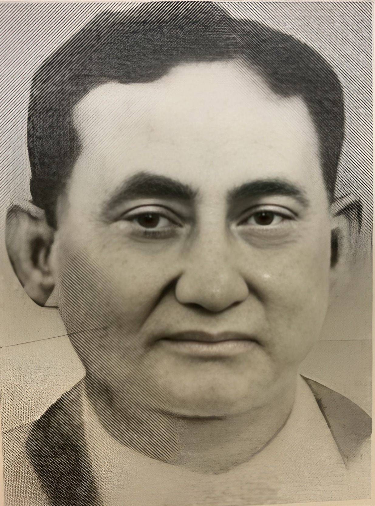

About Us

The Hemchandra Goswami Foundation is dedicated to preserving, celebrating, and advancing the legacy of one of Assam's greatest scholars, thinkers, and cultural visionaries. Hemchandra Goswami (1872–1928) devoted his life to the revival of Assamese language, literature, and heritage during a time of profound upheaval. His pioneering work in historiography, archaeology, manuscript preservation, linguistic research, and literary creation laid the intellectual foundations of modern Assam.
Inspired by his unwavering commitment to knowledge, community, and cultural pride, the Foundation seeks to carry his spirit forward into the future. We work to promote research, restore and archive rare materials, support young scholars and writers, and foster deeper public awareness of Assam's rich intellectual and artistic traditions.
Through publications, cultural initiatives, educational outreach, and collaborations with institutions and individuals, we aim to keep Hemchandra Goswami's ideals alive, rooted in scholarship, guided by integrity, and dedicated to the greater good. The Foundation stands not merely as a memorial, but as a living bridge between Assam's past and its unfolding future.
Frequently Asked Questions
The Hemchandra Goswami Foundation is a non-profit organization dedicated to preserving and promoting the legacy of Pandit Hemchandra Goswami, a renowned Assamese scholar, historian, and cultural visionary who lived from 1872 to 1928.
Hemchandra Goswami (1872–1928) was one of the foremost architects of modern Assamese intellectual history - an extraordinary scholar whose life's work safeguarded the cultural, linguistic and historical foundations of Assam. Born in the spiritual ambience of Gourang Sattra in Golaghat, he grew into a brilliant student, an early leader among Assamese youths in Calcutta, and a passionate advocate for the revival of the Assamese language at a time of profound crisis. His pioneering scholarship shaped the foundations of Assamese literature, historiography and archaeology. Goswami's tireless efforts, from editing Hemkosh to scientifically cataloguing Assamese manuscripts, establishing Assamese in the Calcutta University curriculum, and recovering rare chronicles and artifacts; helped define the modern understanding of Assam's antiquity. A poet of the Romantic age, a reformer of sattra culture, a trusted adviser to eminent scholars, and a nationalist who introduced Gandhi to the depth of Assamese civilisation, he embodied service to language and land. In just 56 years, Hemchandra Goswami carved an enduring legacy. His work remains indispensable, his ideals evergreen, and his contributions foundational to the cultural identity of Assam.
We work to promote research, restore and archive rare materials, support young scholars and writers, and foster public awareness of Assam's rich intellectual traditions. Our initiatives include publications, cultural events, educational outreach, and collaborations with academic institutions.
You can support the Foundation through donations, volunteering your time and expertise, contributing to our research initiatives, or partnering with us on cultural and educational projects. Your contribution helps us preserve and promote Assam's rich heritage for future generations.
Yes! We welcome volunteers who are passionate about preserving Assamese culture and heritage. Whether you have skills in research, writing, event organization, or community engagement, we have opportunities for you to contribute meaningfully to our mission.